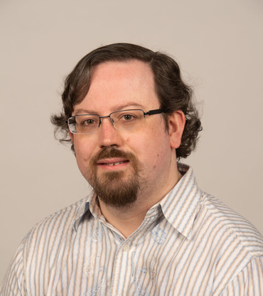

Ciaran McCreesh

Research interests
- Solving (NP) hard problems in practice, particularly combinatorial optimisation and graph theory
problems.
- Understanding computational complexity starting from science and experiments, rather than axioms: what
makes hard problems really hard in practice, and how does this help us design better algorithms?
- Empirical algorithmics and algorithm engineering, with a particular focus on how we can engineer trustworthy
or certifying algorithms.
- Constraint programming and old-school, uncool artificial intelligence.
- Parallel search for branch and bound algorithms, and parallelism for intelligent backtracking search.
Source code
- My GitHub profile contains code, experimental scripts, etc to
reproduce experiments in my publications.
- The Glasgow Subgraph Solver is based
upon a series of papers by (subsets of) myself, Patrick Prosser, and James Trimble. This is the version of
the code you should use if you're just interested in having a good solver, rather than reproducing the
results in a particular paper.
Publications and Conference Papers
- Stephan Gocht, Ross McBride, Ciaran McCreesh, Jakob Nordström,
Patrick Prosser and James Trimble: Certifying Solvers for Clique and Maximum
Common (Connected) Subgraph Problems.
To appear at CP 2020.
[author-final PDF]
- Ciaran McCreesh, Patrick Prosser and James Trimble: The Glasgow Subgraph Solver: Using Constraint Programming to Tackle Hard Subgraph Isomorphism Problem Variants.
Tool paper. ICGT 2020.
[author-final PDF]
- Stephan Gocht, Ciaran McCreesh and Jakob Nordström: Subgraph Isomorphism Meets Cutting Planes: Solving With Certified Solutions.
To appear at IJCAI 2020.
[author-final PDF]
- Jan Elffers, Stephan Gocht, Ciaran McCreesh and Jakob Nordström: Justifying All Differences Using Pseudo-Boolean Reasoning.
AAAI 2020.
[author-final PDF]
- Ciaran McCreesh, William Pettersson and Patrick Prosser: Understanding the Empirical Hardness of Random Optimisation Problem.
CP 2019: 333-349.
[DOI, author-final PDF]
- Blair Archibald, Fraser Dunlop, Ruth Hoffmann, Ciaran McCreesh, Patrick Prosser and James
Trimble: Sequential and Parallel Solution-Biased Search for Subgraph Algorithms.
CPAIOR 2019: 20-38.
[DOI, author-final PDF, source code]
- Ian P. Gent, Ian Miguel, Peter Nightingale, Ciaran McCreesh, Patrick Prosser, Neil C. A. Moore, Chris
Unsworth: A review of literature on parallel constraint solving.
TPLP 18(5-6): 725-758 (2018).
[DOI, author-final PDF]
- José Cano, David Robert White, Alejandro Bordallo, Ciaran McCreesh, Anna Lito Michala, Jeremy Singer,
Vijay Nagarajan: Solving the task variant allocation problem in distributed robotics.
Auton. Robots 42(7): 1477-1495 (2018).
[DOI (open access)]
- Ciaran McCreesh, Patrick Prosser, Christine Solnon and James Trimble: When Subgraph Isomorphism is
Really Hard, and Why This Matters for Graph Databases.
Journal of Artificial Intelligence Research (JAIR) 61: 723-759 (2018).
[DOI (open access), Author-final PDF]
- Ruth Hoffmann, Ciaran McCreesh, Samba Ndojh Ndiaye, Patrick Prosser, Craig Reilly, Christine Solnon, and James Trimble: Observations from Parallelising Three Maximum Common (Connected) Subgraph Algorithms.
CPAIOR 2018: 298-315.
[author-final PDF, source code]
- Blair Archibald, Patrick Maier, Ciaran McCreesh, Robert Stewart and Phil Trinder: Replicable parallel branch and bound search.
Journal of Parallel and Distributed Computing, Volume 113, 92-114 (2018)
[DOI (open access)]
- Ciaran McCreesh: Solving Hard Subgraph Problems in Parallel.
PhD thesis. University of Glasgow, 2017.
[PDF]
- Ciaran McCreesh, Patrick Prosser, Kyle Simpson and James Trimble: On Maximum Weight Clique Algorithms, and How They Are Evaluated.
CP 2017: 206-225.
[DOI, author-final PDF, maximum weight clique benchmark instances]
- Ciaran McCreesh, Patrick Prosser and James Trimble: A Partitioning Algorithm for Maximum Common Subgraph Problems.
IJCAI 2017: 712-719.
[DOI, author-final PDF, source code]
- Ruth Hoffmann, Ciaran McCreesh and Craig Reilly: Between Subgraph Isomorphism and Maximum Common Subgraph.
AAAI 2017: 3907-3914.
[abstract and PDF,
author-final PDF,
Source code]
- Ciaran McCreesh, Samba Ndojh Ndiaye, Patrick Prosser and Christine Solnon: Clique and Constraint Models for Maximum Common (Connected) Subgraph Problems.
CP 2016: 350-368.
[DOI,
author-final PDF,
Source code]
- Ciaran McCreesh, Patrick Prosser and James Trimble: Morphing between Stable Matching Problems
CP 2016: 832-840
[DOI, author-final PDF]
- Ciaran McCreesh, Patrick Prosser and James Trimble: Heuristics and Really Hard Instances for
Subgraph Isomorphism Problems.
IJCAI 2016: 631-638.
[abstract and PDF,
author-final PDF,
Source code]
- Ciaran McCreesh and Patrick Prosser: Finding Maximum k-Cliques Faster Using Lazy Global Domination.
SoCS 2016: 72-80.
[abstract and PDF,
author-final PDF, Older preprint on arXiv,
Source code]
- Jose Cano Reyes, David White, Alejandro Bordallo, Ciaran McCreesh, Patrick Prosser, Jeremy Singer and
Vijay Nagarajan: Task Variant Allocation in Distributed Robotics.
Robotics Science and Systems 2016.
[PDF, author-final PDF]
- Lars Kotthoff, Ciaran McCreesh and Christine Solnon: Portfolios of Subgraph Isomorphism
Algorithms.
LION 2016: 107-122.
[DOI, author-final PDF,
Source code]
- Ciaran McCreesh, Patrick Prosser: A Parallel, Backjumping Subgraph Isomorphism Algorithm using
Supplemental Graphs.
CP 2015: 295-312.
[DOI, author-final PDF, code, datasets, experimental
scripts, VM for recomputation]
- Craig Macdonald, Ciaran McCreesh, Alice Miller and Patrick Prosser: Constructing Sailing Match Race
Schedules: Round-Robin Pairing Lists.
CP 2015: 671-686
[DOI, author-final PDF]
- Ciaran McCreesh, Patrick Prosser: The Shape of the Search Tree for the Maximum Clique Problem, and the
Implications for Parallel Branch and Bound.
ACM Transactions on Parallel
Computing Volume 2 Issue 1 (2015).
[DOI,
Older preprint on arXiv].
- Ciaran McCreesh, Patrick Prosser: A Parallel Branch and Bound Algorithm for the Maximum Labelled Clique
Problem.
Optimization Letters (2014)
[DOI (open
access)].
- Ciaran McCreesh, Patrick Prosser: Reducing the Branching in a Branch and Bound Algorithm for the Maximum
Clique Problem.
CP 2014: 549-563
[DOI, author-final PDF]
- Ciaran McCreesh, Patrick Prosser: An Exact Branch and Bound Algorithm with Symmetry Breaking for the
Maximum Balanced Induced Biclique Problem.
CPAIOR 2014: 226-234
[DOI, author-final PDF]
- Ciaran McCreesh, Patrick Prosser: Multi-Threading a State-of-the-Art Maximum Clique
Algorithm.
Algorithms 6(4): 618-635 (2013)
[DOI (open access)]